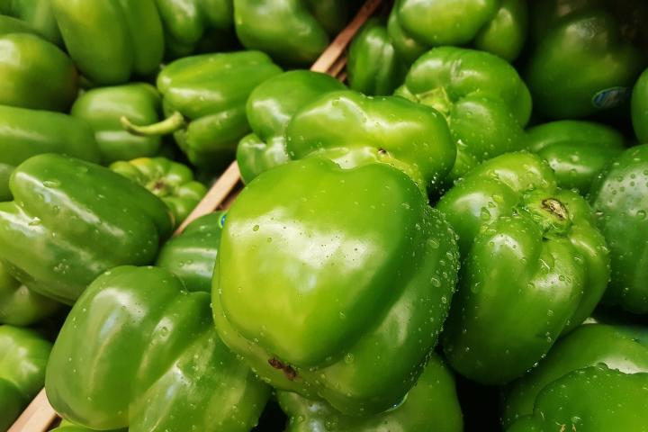
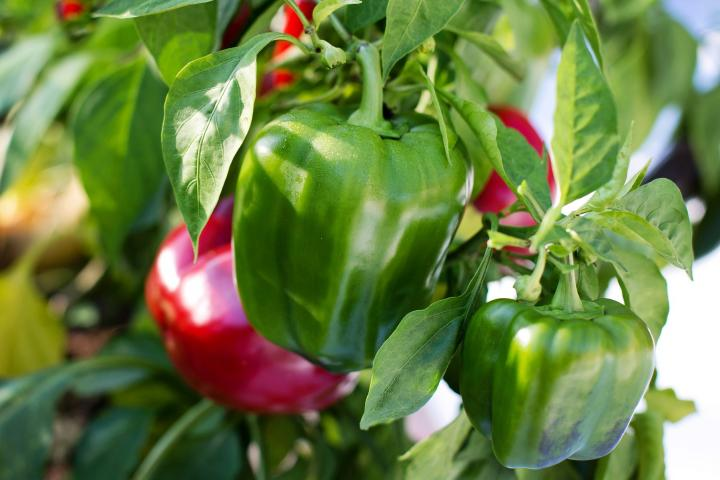

Peppers have a long growing season (60 to 90 days), so most home gardeners buy starter pepper plants at the garden nursery rather than grow them from seed. However, you can start pepper seeds indoors if you want to grow your own. Northern gardeners should also warm outdoor soil by covering it with black plastic as early as possible in late winter/early spring.
Red and green peppers are good sources of vitamin C, some vitamin A, and small amounts of several minerals. They’re wonderful raw in salads or as a snack with dip or hummus. You can also stuff peppers with seasoned bread crumbs or meat and bake them.
planting
Grow peppers in a space with full sun and well-draining moist (but not wet) soil. A balance between sandy and loamy soil will ensure that the soil drains well and warms quickly. Mix in large amounts of organic matter (such as compost) into the soil, especially if you are working with heavy clay.
Avoid planting peppers in places where you’ve recently grown other members of the nightshade family—such as tomatoes, potatoes, or eggplants—as this can expose peppers to disease.
Avoid planting peppers in places where you’ve recently grown other members of the nightshade family such as tomatoes, potatoes, or eggplants as this can expose peppers to disease.
When to Plant Peppers
To start peppers indoors in pots, sow seeds 8 to 10 weeks before your last spring frost date.
Plant pepper starts or transplants outdoors about 2 to 3 weeks after the threat of frost has passed and the soil has reached 65°F (18°C).
How to Start Peppers Indoors
To start indoors: Start pepper seeds 1/4 of an inch deep, three to a pot filled with potting mix. For faster germination, maintain soil at 70°F (21°C) or above. To achieve these sorts of temperatures, you’ll probably need a heated propagator or heat mat and some grow lights.
Ideal conditions should see seedlings appear within about two weeks, but some varieties take as long as five weeks, so don’t give up on them too soon! Thin out the weakest seedling; let the remaining two pepper plants in each pot grow as one. The leaves of two plants help to protect the peppers and often greater than that from two separate plants.
If seedlings become leggy or too tall before it’s time to plant outside, replant them in a bigger pot up to their lowest leaves, just like tomatoes, to help support them. Keep seedlings warm with plenty of light until you’re ready to plant. If the plants have around five to eight leaves and you can see roots at the drainage holes, it’s time to move them up a pot size.
Be sure to harden off seedlings about 10 days before transplanting outdoors, as peppers are very sensitive to cool temperatures.
How to Plant Peppers Outdoors
If you’re buying pepper starts, choose ones with straight, sturdy stems, 4 to 6 leaves, and no blooms or fruit. To harden off pepper plants, set plants outdoors a week or more after the frost free date or when the average daily temperatures reaches 65°F (18°C).
Before transplanting in the garden, mix aged manure and/or compost into the soil about 8 to 10 inches deep and rake it several times to break up the large clods.
Put transplants into the ground once the soil temperature has reached 65°F (18°C). Speed up the warming of the soil by covering it with black plastic or a dark mulch about a week before you intend to plant.
It is best to transplant peppers in the evening or on a cloudy day. This will keep the plants from drying too much and wilting.
Make the transplant holes 3 to 4 inches deep and 12 to 18 inches apart in the row. Space the rows 2 to 3 feet apart. Before planting, fill the holes with water and let it soak in. Into each planting hole, put two or three wooden matchsticks (for sulfur) and 1 teaspoon of low-nitrogen, high-phosphorus fertilizer (too much nitrogen will reduce fruit set).
When pulling the transplant out of its tray or pot, be gentle and leave as much soil as possible around the roots. Set the transplants about one inch deeper than they were in their original container. Fill the hole with soil and pack it loosely around the plant. Leave a slightly sunken area around each plant to hold water.
Water the plants after planting.
Using liquid fertilizer material (manure tea or starter fertilizer) is usually beneficial at this time.
Stake now to avoid disturbing the roots later. If necessary, support plants with cages or stakes to prevent bending. Try commercially available cone-shaped wire tomato cages. They may not be ideal for tomatoes, but they are just the thing for peppers. Or, build your own garden supports.
Check out this video to learn how to plant bell peppers:
Growing
Water regularly with 1 to 2 inches of water per week. This doesn’t mean shallow watering; peppers like a good dousing but should be left to almost dry out between waterings; they need that period of relative dry. Slow, deep watering helps the root system grow strong. Do not let pepper plants wilt because this will reduce yield and quality of the fruit. Inconsistent watering also makes pepper susceptible to blossom-end rot.
In a warm or desert climate, or at the height of summer, you may need to water every day. Note that in desert regions at around 4,000 feet of elevation, sweet bell peppers often fail to develop a thick, fleshy wall.
Peppers are extremely heat sensitive. Blossoms may drop if plants are stressed—if it’s too hot (above 85° to 90°F in daytime) or cold (below 60°F at night) or water is inadequate. Use shade cloth or row covers to avoid heat stress or sunscald (exposure to direct rays of the sun during hot weather which will cause peppers to get papery, blister, or get papery).
Mulch to maintain moisture and deter weeds.
Weed carefully around plants to avoid disturbing roots.
Contrary to popular belief, spraying pepper plants with epsom salts isn’t beneficial.
recommended variety
Look for varieties that ripen to their full color quickly; fully mature peppers are the most nutritious—and tastier, too!
Green peppers that turn Red: ‘Lady Bell’, ‘Gypsy’, ‘Bell Boy’, ‘Lipstick’
…Orange: ‘Milena’, ‘Orange Sun’
…Yellow: ‘Golden California Wonder’

Harvesting
Once the plants begin producing fruits, pick them promptly, the moment they have reached their full size and color. Regular picking encourages plants to produce more flowers and, of course, more fruits.
That said, the longer bell peppers stay on the plant, the more sweet they become and the greater their vitamin C content.
Use a sharp knife or scissors to cut peppers clean off the plant.
How to Store Peppers
Peppers can be refrigerated in plastic bags for up to 10 days after harvesting.
Bell peppers can be frozen for later use.
Peppers can also be dried: Preheat oven to 140°F. Wash, core, and seed. Cut into 1/2-inch strips. Steam about 10 minutes, then spread on baking sheet. Dry in oven 4 to 6 hours; turn occasionally and switch tray positions. Cool, then store in bags or containers in a refrigerator.

pests/diseases
Pollination can be reduced in temperatures below 60°F (16°C) and above 90°F (32°C). Too much nitrogen in the soil can produce healthy foliage growth but discourage fruit from setting. Flower drop is caused by high heat OR very low humidity. If the air is very dry, douse the soil with water and thoroughly mist plants.
Spider mites and aphids are two common pests of peppers, especially plants grown under cover. Spider mites—identified by the fine webbing on the underside of leaves—thrive in hot, dry weather. Mist-spray these areas regularly at the first sign of an attack to make conditions as hostile as possible for the mites.
Aphids also prefer the undersides of leaves but are found on other parts of the plant too. Squish isolated clusters, or for more serious infestations, take plants out into the open, away from other peppers, then carefully turn the plants upside down so you can brush Spider mites and aphids are two common pests of peppers, especially plants grown under cover. Spider mites – identified by the fine webbing on the underside of leaves – thrive in hot, dry weather. Mist-spray these areas regularly at the first sign of an attack to make conditions as hostile as possible for the mites.
Aphids also prefer the undersides of leaves but are found on other parts of the plant too. Squish isolated clusters, or for more serious infestations, take plants out into the open, away from other peppers, then carefully turn the plants upside down so you can brush or blast the aphids off with a hose.
Bell Pepper Pests and Diseases
Pest/Disease
Type
Symptoms
Control/Prevention
Anthracnose
Fungus
Yellow/brown/purple/black spots on leaves; sunken, dark spots on stems and fruit; spots may develop a salmon-pink, gelatinous mass; eventually, plants rot
Destroy infected plants; choose resistant varieties; provide good drainage; avoid overhead watering; apply compost for nutrition; use mulch; practice crop rotation.
Aphids
Insect
Misshapen/yellow leaves; distorted flowers/fruit; sticky “honeydew” (excrement produced by aphids); sooty, black mold that forms on honeydew; large presence of ants on plants
Grow companion plants to either attract aphids away (nasturtiums) or repel them outright (basil, rosemary, strong-scented plants); knock aphids off plants with water spray, apply insecticidal soap; put banana or orange peel around plants; wipe leaves with a 1-2% solution of liquid dish soap and water every 2-3 days for 2 weeks; add native plants to attract aphid predators.
Bacterial leaf spot
Bacteria
Varies; water- soaked rust/black leaf spots between veins later dry/fall out, leaving holes; leaves yellow/ distort/wilt/die; stem cankers
Destroy infected parts/ severely infected plants (do not compost); remove plant debris regularly; disinfect tools; prevent plant stress/injury; good air circulation; avoid overhead watering
Blossom-end rot
Disorder
Caused by lack of sufficient calcium uptake.
Symptoms: dark, water-soaked spots on blossom end of fruit (the side opposite the stem) may enlarge and become sunken, leathery, rotted
Remove affected fruit; plant at proper soil temperature; water deeply and evenly; use mulch; maintain proper soil pH (6.5) and nutrient levels; avoid excessive nitrogen; provide good drainage; avoid damaging roots.
Colorado potato beetles
Insect
Yellow-orange eggs laid in clusters on leaf undersides; larvae and adults chew holes in foliage
Remove eggs/larvae/beetles by hand; use straw mulch; weed around plants; use row covers; destroy plant matter at end of season; practice crop rotation
Cucumber mosaic virus
Virus
Symptoms vary, but may include: stunting; mottled green/yellow/white pattern or ringed spots on leaves/fruit; distorted leaf growth; warts on fruit
Often spread by aphids. Destroy infected plants; choose resistant varieties and certified virus-free seed; use row covers; disinfect gardening tools after each use; keep garden weed-free; use mulch.
Flea beetles
Insect
Numerous tiny holes in leaves (as if they had been hit by a tiny shotgun)
Use row covers to physically block flea beetles; mulch heavily; add native plants to attract beneficial insect predators.
Leaf miners
Insect
Meandering blisters in leaves caused by tunneling larvae
Remove infested leaves; weed; use row covers; till soil early in season; rotate plantings
Root-knot nematodes
Insect
Roots become “knotted” or galled; plants stunted/yellow/wilted
Destroy affected plant matter (especially roots); choose resistant varieties; expose soil to sun (solarize); add aged manure/compost; disinfect gardening tools between uses; till soil in autumn; practice crop rotation
Spider mites
Insect
Fine webs;
yellow-specked under- side of leaves, later brown-edged or bronze or yellow leaves; leaf drop
Rinse plants with water, mist daily; apply insecticidal soap
Tomato hornworms
Insect
Chewed leaves (initially toward top of plant); rapid defoliation; black/green excrement; gouged fruit
Check undersides of leaves for hornworms, remove by hand and dispose of hornworms. (If you encounter hornworms that have white, ricelike cocoons on their backs, relocate them instead; the cocoons belong to beneficial parasitic wasps.) Till soil in autumn and spring; companion plant with dill/basil/marigolds to attract (and trap) or repel hornworms; spray plants with Bt (Bacillus thuringiensis).